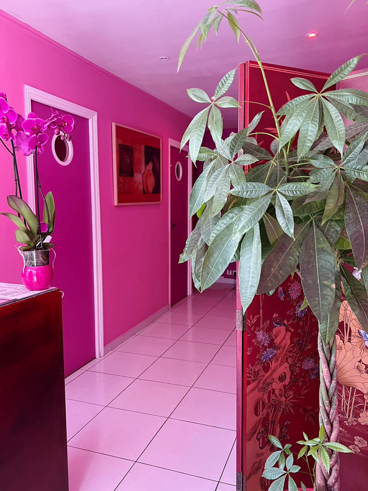
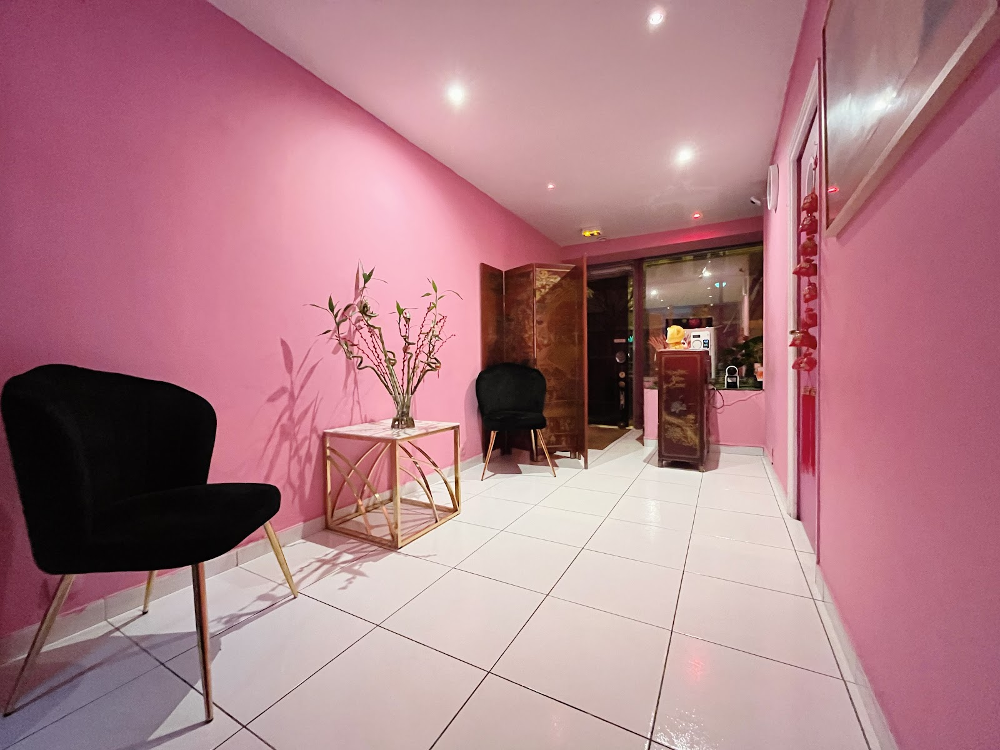
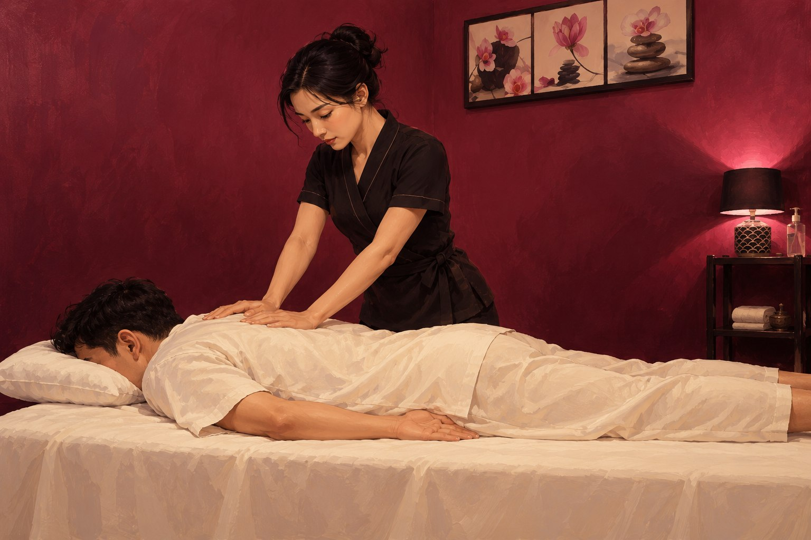
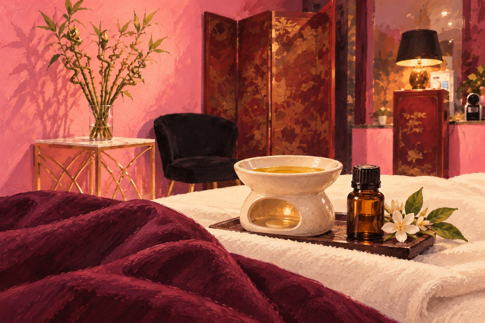
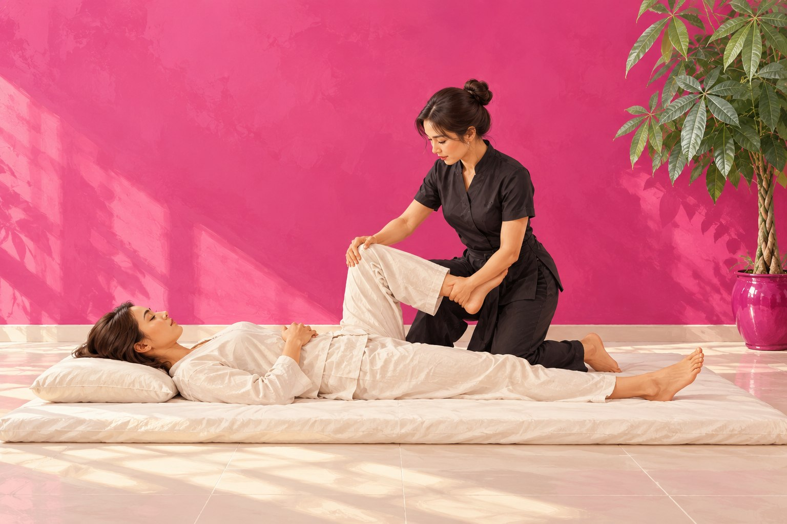
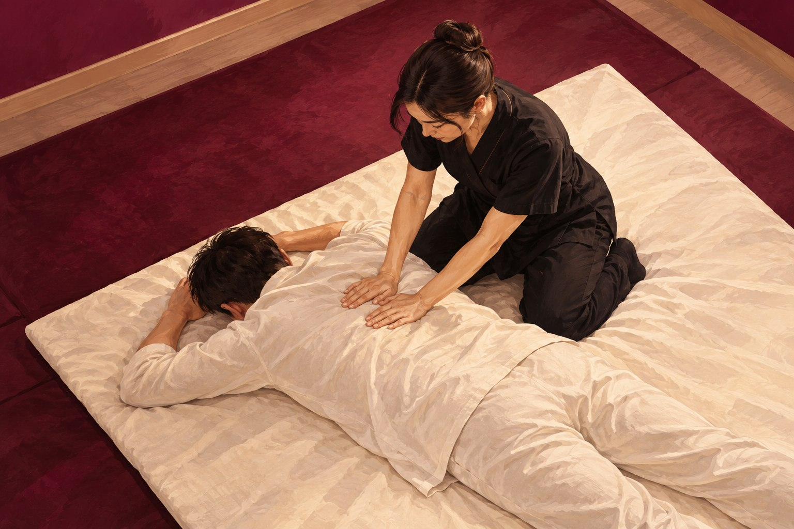
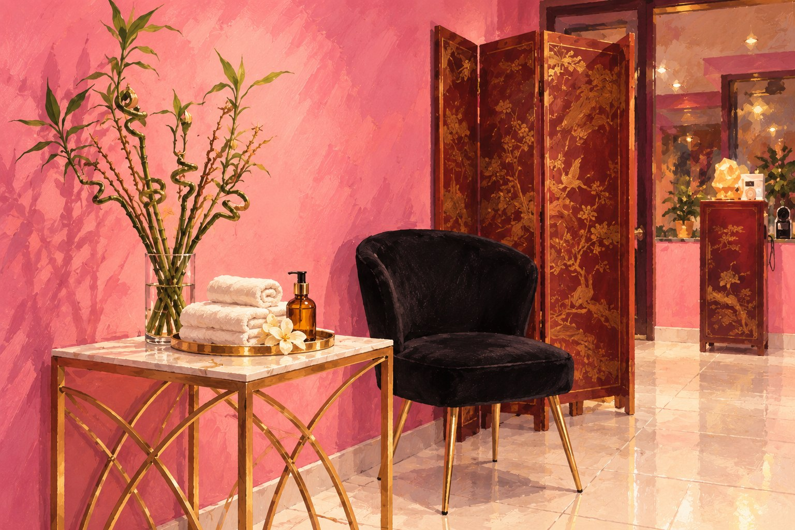

À votre écoute
Un massage ajusté à vos préférences et aux zones que vous souhaitez détendre.
Massage chinois · Paris 12
Massages personnalisés, gestes traditionnels et accueil attentionné dans l’atmosphère intime de notre salon.
À quelques minutes de Gare de Lyon, Reuilly-Diderot et Montgallet, FenFang vous accueille chaque jour pour un moment de détente adapté à vos envies.
Pression douce ou plus soutenue, huile traditionnelle ou huile chaude : chaque séance se construit dans l’écoute, la discrétion et le respect.
Un massage ajusté à vos préférences et aux zones que vous souhaitez détendre.
Des cabines chaleureuses, une douche à disposition et une ambiance feutrée.
Avec ou sans rendez-vous, sept jours sur sept, au cœur de Paris 12.

L’expérience FenFang
« Se recentrer, respirer, relâcher les tensions. »
Un accueil attentionné, une boisson chaude et le temps de retrouver votre rythme avant de repartir.

Un aperçu de notre univers
Avant votre visite, découvrez le salon en images. Quelques instants pour vous imprégner de son atmosphère.
La vidéo ne peut pas être lue. Ouvrir le fichier vidéo.
Nos massages
Une sélection de massages aux rythmes différents, du relâchement en douceur au travail plus tonique.
Illustrations artistiques inspirées de notre salon. Les scènes et personnages sont imaginés.

Tradition
Gestes précis et pressions adaptées pour délier les tensions et retrouver une agréable sensation d’équilibre.
Dès 30 €

Détente
Des mouvements longs, fluides et enveloppants pour une relaxation profonde du corps et de l’esprit.
Dès 60 €

Énergie
Une approche plus tonique pour assouplir le corps et dénouer les tensions accumulées.
Dès 35 €

Pressions
Des pressions ciblées le long du corps pour favoriser la détente et retrouver de la vitalité.
Dès 40 €

Signature
Une expérience généreuse et personnalisée, pensée pour se déconnecter pleinement du quotidien.
Dès 60 €
Tarifs
Une courte pause ou une heure pour vous. Appelez-nous pour choisir la séance qui vous correspond ou demander une durée plus longue.
Conseil et réservation · 07 50 78 57 72Nous trouver
Du lundi au dimanche
10h00 — 2h00 du matin